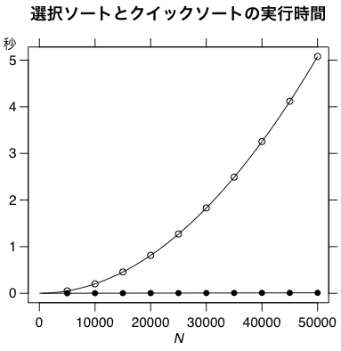
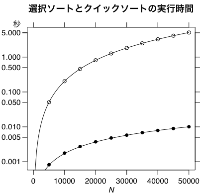
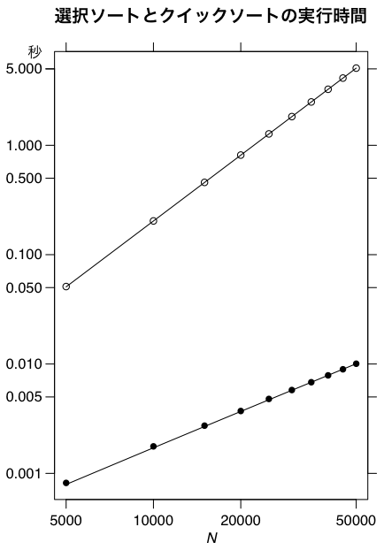

拙著『C言語による最新アルゴリズム事典』の選択ソートとクイックソートの実行時間を比較する。
#include <stdio.h>
#include <stdlib.h>
#include <time.h>
void selectsort(int n, int a[]) { /* 拙著参照 */ }
void quicksort(int a[], int first, int last) { /* 拙著参照 */ }
#define N 50000
int a[N];
int main(int argc, char *argv[])
{
int i, n;
double t, u, v;
for (n = 5000; n <= N; n += 5000) {
for (i = 0; i < n; i++) a[i] = rand();
t = clock();
selectsort(n, a);
u = (clock() - t) / CLOCKS_PER_SEC;
for (i = 0; i < n; i++) a[i] = rand();
t = clock();
quicksort(a, 0, n-1);
v = (clock() - t) / CLOCKS_PER_SEC;
printf("%d %g %g\n", n, u, v);
}
}
実際には CLOCKS_PER_SEC は内部時計の精度にかかわらず 1000000
になっているが，Linux での精度は 1/100
秒程度であり，上のプログラムそのままでは使えない。下は
Mac mini (Core 2 Duo, 2GHz) の gcc 4.2.1
でオプションなしでコンパイルし実行した結果である：
N Select Quick
5000 0.051097 0.000818
10000 0.203447 0.001766
15000 0.45802 0.002731
20000 0.814136 0.003718
25000 1.27157 0.004794
30000 1.83047 0.005782
35000 2.49122 0.006813
40000 3.25446 0.007874
45000 4.11909 0.008951
50000 5.07905 0.010062
これをクリップボードにコピーし，次のように読み込む：
X = read.table(pipe("pbpaste"), header=TRUE)
attach(X)
プロットし，理論式を重ねる：
par(family="Helvetica") # Mac
par(las=1) # 縦軸の文字を横向きにしない
par(mgp=c(1.5,0.7,0)) # 軸マージン（デフォルト: c(3,1,0)）
plot(N, Select, xlim=c(0,max(N)), ylim=range(c(Select,Quick)),
xlab=expression(italic(N)), ylab="")
a = Select[length(Select)] / N[length(N)]^2
curve(a*x^2, add=TRUE)
axis(2, "秒", at=5, padj=-1, family="HiraKakuPro-W3")
axis(3, labels=FALSE)
axis(4, labels=FALSE)
points(N, Quick, pch=16)
b = Quick[length(Quick)] / (N[length(N)] * log(N[length(N)]))
curve(b*x*log(x), add=TRUE)
title("選択ソートとクイックソートの実行時間", family="HiraKakuPro-W6")

これではクイックソートが速すぎて見えない。縦軸だけ対数目盛りにしてみる。plot()
に log="y"
というオプションを入れる：

横軸も縦軸も対数目盛りにするには plot()
のオプションを log="xy"
にする。ただ，範囲に0が含まれると対数にできないので，xlim=range(N)
にする必要がある。

Last modified: 2009-06-08 10:44:21